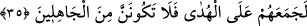

Sonunda boz eşeğin çirkin kuyruğuna döner
Önce açıla saçıla oluşunu güzelce bir gör
Sonunda da bozuluşunu, rüsvay oluşunu seyret
Başka bir beytinde de şöyle der:
Ey gönül! Sabırlı ol, üzülme; çünkü sonunda
Bu akşamın sabaha döner, bu gece seher olur
Nuh Peygamber gibi tufan derdine, sabrın varsa eğer
Belâ savuşur, bin yıllık murâd sonunda ele geçer
“Allah’ın sözlerini” yani peygamberlere yardım etme ve onları üstün kılma va’dini
“değiştirecek bir kimse yoktur.” Nitekim O şöyle buyurmuştur: “Andolsun ki
peygamber kullarımıza söz vermişizdir: Onlar mutlaka zafere ulaşacaklardır.
Bizim ordumuz şüphesiz üstün gelecektir.” (es-Saffat, 37/171-173)
“Şüphesiz ki sana” gönlünü rahatlatmak üzere “peygamberlerin haberlerinden bir
kısmı geldi.” Bu haber de Allah Teâlâ’nın sana yardım edeceğidir.
35. Eğer onların yüz çevirmesi sana ağır geldi ise, yapabilirsen yerin içine
inebileceğin bir tünel ya da göğe çıkabileceğin bir merdiven ara ki onlara bir
mûcize getiresin! Allah dileseydi, elbette onları hidayet üzerinde toplayıp
birleştirirdi, o halde sakın cahillerden olma!
“Eğer onların yüz çevirmesi sana ağır geldiyse,” Yani, onların getirdiğin Kur’ân’a
îman etmekten yüz çevirmeleri, onu Allah’ın âyetlerinden saymamaları sana ağır
geliyor, zoruna gidiyorsa ve onların İslam’a girmelerini son derece arzulayarak
isteklerine cevap vermek istiyorsan, “haydi yapabilirsen yerin içine” ortasına
girebileceğin “bir delik” derin bir menfez ve tünel, “ya da göğe” doğru çıkan semâya
yükseleceğin “bir merdiven ara ki” arzuları doğrultusunda “onlara bir mûcize
getiresin.!” Yani, bunu yapabilirsen yap, demektir.
Şeyhzâde der ki: “
” yerin altında başka tarafa çıkışı olan tünele benzer bir
deliktir. Arap tavşanının toprak altında açtığı oyuklara da bu isim verilir. Çünkü bu
hayvan yeri derinlemesine oyar, sonra da başka bir taraftan dışarı çıkar.
Bu ifadelerden maksat, kavminin İslam’a girmesi husûsunda Rasûlullah (s.a.)’ın ne
kadar istekli olduğunu beyandır. Eğer o, yerin altından yahut gökten onlara bir mûcize
getirmeye gücü yetse îman ederler ümidiyle bunu yapardı. Âyette “edin, yap” ifadesi